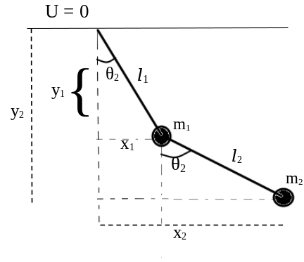
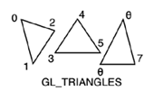
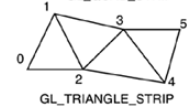

oguz81
Published first
This is a mini tutorial for making double pendulum with C++ and OpenGL. You can look into the GitHub repository for source code here, or watch it on YouTube.
Prerequistes
C++, OpenGL, Differential Equations, Runge-Kutta methods -or generally numerical methods for ordinary differential equations, Lagrangian mechanics.
OpenGL version 3.30
We will use Lagrangian mechanics to obtain the equations of motion of the system. First, let's draw the system.

Now, we write x and y coordinates of both pendulum balls and start to derive the equations of motion.
T : kinetic energy
U : potential energy
L : Lagrangian (L = T - U)
For m1
\begin{align*} x_1 &= l_1\sin{\theta_1}\\ y_1 &= -l_1\cos{\theta_1}\\ \dot{x_1} &= l_1\dot{\theta_1}\cos{\theta_1}\\ \dot{y_1} &= l_1\dot{\theta_1}\sin{\theta_1}\\ \\ T_1 &= \frac{1}{2}m_1(\dot{x_1}^2 + \dot{y_1}^2)\\ \\ &= \frac{1}{2}m_1l_1^2\dot{\theta_1}^2\\ \\ U_1 &= -m_1gl_1\cos{\theta_1} \end{align*}
For m2
\begin{align*} x_2 &= l_1\sin{\theta_1} + l_2\sin{\theta_2}\\ y_2 &= -l_1\cos{\theta_1} - l_2\cos{\theta_2}\\ \dot{x_2} &= l_1\dot{\theta_1}\cos{\theta_1} + l_2\dot{\theta_2}\cos{\theta_2}\\ \dot{y_2} &= l_1\dot{\theta_1}\sin{\theta_1} + l_2\dot{\theta_2}\sin{\theta_2}\\ T_2 &= \frac{1}{2}m_2(\dot{x_2}^2 + \dot{y_2}^2)\\ &= \frac{1}{2}m_2(l_1^2\dot{\theta_1}^2 + l_2^2\dot{\theta_2}^2 + 2l_1l_2\dot{\theta_1}\dot{\theta_2}\cos{(\theta_1 - \theta_2)})\\ U_2 &= - m_2gl_1\cos{\theta_1} - m_2gl_2\cos{\theta_2}\\ \\ \end{align*}
Kinetic energy of the system; \begin{align*} T &= T_1 + T_2\\ &=\frac{1}{2}(m_1l_1^2\dot{\theta_1}^2 + m_2l_1^2\dot{\theta_1}^2 + m_2l_2^2\dot{\theta_2}^2) + m_2l_1l_2\dot{\theta_1}\dot{\theta_2}\cos{(\theta_1 - \theta_2)} \end{align*} Potential energy of the system; \begin{align*} U &= U_1 + U_2\\ &= -m_1gl_1\cos{\theta_1} - m_2gl_1\cos{\theta_1} - m_2gl_2\cos{\theta_2} \end{align*} The system has two generalized coordinates: θ1 and θ2. Therefore we have two Euler-Lagrange equations for both of coordinates. For θ1; \begin{align} \frac{\partial L}{\partial \theta_1} - \frac{d}{dt}\frac{\partial L}{\partial \dot{\theta_1}} = 0 \qquad (1) \end{align} and for θ2; \begin{align} \frac{\partial L}{\partial \theta_2} - \frac{d}{dt}\frac{\partial L}{\partial \dot{\theta_2}} = 0 \qquad (2) \end{align} Let's obtain the Lagrangian of the system. \begin{align*} L &= T - U\\ &= \frac{1}{2}(m_1l_1^2\dot{\theta_1}^2 + m_2l_1^2\dot{\theta_1}^2 + m_2l_2^2\dot{\theta_2}^2) + m_2l_1l_2\dot{\theta_1}\dot{\theta_2}\cos{(\theta_1 - \theta_2)}\\ &+ m_1gl_1\cos{\theta_1} + m_2gl_1\cos{\theta_1} + m_2gl_2\cos{\theta_2}\\ \\ \end{align*} For equation (1): \begin{align*} \frac{\partial L}{\partial \theta_1} &= -m_2l_1l_2\dot{\theta_1}\dot{\theta_2}\sin{(\theta_1 - \theta_2)} - m_1gl_1\sin{\theta_1} - m_2gl_1\sin{\theta_1} \\ \\ \frac{d}{dt}\frac{\partial L}{\partial \dot{\theta_1}} &= m_1l_1^2\ddot{\theta_1} + m_2l_1^2\ddot{\theta_1} + m_2l_1l_2\ddot{\theta_2}\cos{(\theta_1 - \theta_2)} - m_2l_1l_2\dot{\theta_2}(\dot{\theta_1} - \dot{\theta_2})\sin{(\theta_1 - \theta_2)}\\ \\ \end{align*} After putting $$\frac{\partial L}{\partial \theta_1}$$ and $$\frac{d}{dt}\frac{\partial L}{\partial \dot{\theta_1}}$$ on equation (1) we obtain the equation of motion for θ1: \begin{align*} \ddot{\theta_1} = \frac{-m_2l_2\dot{\theta_2}^2\sin{(\theta_1 - \theta_2)} - g\sin{\theta_1}(m_1 + m_2) - m_2l_2\ddot{\theta_2}\cos{(\theta_1 - \theta_2)}}{l_1(m_1 + m_2)}\\ \\ \end{align*} For equation (2): \begin{align*} \frac{\partial L}{\partial \theta_2} &= m_2l_1l_2\dot{\theta_1}\dot{\theta_2}\sin{(\theta_1 - \theta_2)} - m_2gl_2\sin{\theta_2}\\ \\ \frac{d}{dt}\frac{\partial L}{\partial \dot{\theta_2}} &= m_2l_2^2\ddot{\theta_2} + m_2l_1l_2\ddot{\theta_1}\cos{(\theta_1 - \theta_2)} - m_2l_1l_2\dot{\theta_1}(\dot{\theta_1} - \dot{\theta_2})\sin{(\theta_1 - \theta_2)}\\ \\ \end{align*} After putting the equations above on equation (2) we obtain the equation of the motion for θ2: \begin{align*} \ddot{\theta_2} = \frac{l_1\dot{\theta_1}^2\sin{(\theta_1 - \theta_2)} - g\sin{\theta_2} - l_1\ddot{\theta_1}\cos{(\theta_1 - \theta_2)}}{l_2}\\ \\ \end{align*} We can say that ω is angular momentum. Therefore; $$\dot{\theta_1} = \omega_1$$ $$\ddot{\theta_1} = \dot{\omega_1}$$ $$\dot{\theta_2} = \omega_2$$ $$\ddot{\theta_2} = \dot{\omega_2}$$ We rewrite the equations of motions. \begin{align} \dot{\omega_1} = \frac{-m_2l_2\omega_2^2\sin{(\theta_1 - \theta_2)} - g\sin{\theta_1}(m_1 + m_2) - m_2l_2\dot{\omega_2}\cos{(\theta_1 - \theta_2)}}{l_1(m_1 + m_2)} \qquad (3) \end{align} \begin{align} \dot{\omega_2} = \frac{l_1\omega_1^2\sin{(\theta_1 - \theta_2)} - g\sin{\theta_2} - l_1\dot{\omega_1}\cos{(\theta_1 - \theta_2)}}{l_2} \qquad (4) \end{align} Both of these equations have derivative terms in both sides of them. So we need to rearrange them. There must be derivative terms only on the left hand side to be able to solve them with Runge-Kutta.
We assign the equation (3) to the in the equation (4) and assign the equation(4) to the in the equation (3). These operations give us the final form of the equations of motion which we use with Runge-Kutta. \begin{align} \dot{\omega_1} = \frac{m_2g\sin{\theta_2}\cos{(\theta_1 - \theta_2)} - m_2\sin{(\theta_1 - \theta_2)}[l_1\omega_1^2\cos{(\theta_1 - \theta_2)} + l_2\omega_2^2] - (m_1 + m_2)g\sin{\theta_1}}{l_1[m_1 + m_2\sin^2{(\theta_1 - \theta_2)}]} \qquad(5) \end{align} \begin{align} \dot{\omega_2} = \frac{(m_1 + m_2)[l_1\omega_1^2\sin{(\theta_1 -\theta_2)} - g\sin{\theta_2} + g\sin{\theta_1}\cos{(\theta_1 - \theta_2)}] + m_2l_2\omega_2^2\sin{(\theta_1 - \theta_2)\cos(\theta_1 -\theta_2)}}{l_2[m_1 + m_2\sin^2{(\theta_1 - \theta_2)}]} \qquad(6) \end{align}
We use fourth-order Runge-Kutta method. Assume that we have a first order differential equation:
\begin{equation}
y'=f(x,y)
\end{equation}
with the initial condition y(x0)=y0. If
\begin{equation}
y_n '=f(x_n,y_n)
\end{equation}
then
\begin{equation}
y_{n+1} = y_n+\frac{1}{6}(k_1 + 2k_2 + 2k_3 + k_4) .
\end{equation}
Here
\begin{align*}
k_1 &= hf(x_n , y_n)\\ % '&' sing is for aligning equations with '='
k_2 &= hf(x_n + \frac{1}{2}h , y_n + \frac{1}{2}k_1)\\
k_3 &= hf(x_n + \frac{1}{2}h , y_n+ \frac{1}{2}k_2)\\
k_4 &= hf(x_n + h , y_n + k_3)
\end{align*}
h : step length
If a system has a second order differential equation then Runge-Kutta changes a bit. First, we describe the system with two-coupled first order differential equations.
\begin{align}
y' &= f(x,y,z) = z\\
y'' &= g(x,y,z) = z'
\end{align}
Initial conditions are
\begin{align*}
y(x_0) &= y_0\\
z(x_0) &= z_0
\end{align*}
Solutions of the differential equations are
\begin{align}
y_{n+1} &= y_n+\frac{1}{6}(k_1 + 2k_2 + 2k_3 + k_4)\\
z_{n+1} &= z_n+\frac{1}{6}(l_1 + 2l_2 + 2l_3 + l_4)
\end{align}
and
\begin{align*}
k_1 & = hf(x_n, y_n, z_n)\\
l_1 & = hg(x_n, y_n, z_n)\\
k_2 & = hf(x_n + \frac{1}{2}h, y_n + \frac{1}{2}k_1, z_n + \frac{1}{2}l_1)\\
l_2 & = hg(x_n + \frac{1}{2}h, y_n + \frac{1}{2}k_1, z_n + \frac{1}{2}l_1)\\
k_3 & = hf(x_n + \frac{1}{2}h, y_n + \frac{1}{2}k_2, z_n + \frac{1}{2}l_2)\\
l_3 & = hg(x_n + \frac{1}{2}h, y_n + \frac{1}{2}k_2, z_n + \frac{1}{2}l_2)\\
k_4 & = hf(x_n + h, y_n + k_3, z_n + l_3)\\
l_4 & = hg(x_n + h, y_n + k_3, z_n + l_3)
\end{align*}
Let's describe our system. \begin{align*} \dot{\theta_1} &= \omega_1 = f_1(\omega_1)\\ \ddot{\theta_1} &= \dot{\omega_1} = g_1(\theta_1, \theta_2, \omega_1, \omega_2)\\ \\ \dot{\theta_2} &= \omega_2 = f_2(\omega_2)\\ \ddot{\theta_2} &= \dot{\omega_2} = g_2(\theta_1, \theta_2, \omega_1, \omega_2)\\ \end{align*} Solutions are: \begin{align*} \theta_{1(n+1)} &= \theta_{1n} + \frac{1}{6}(k_1 + 2k_2 + 2k_3 + k_4)\\ \omega_{1(n+1)} &= \omega_{1n} + \frac{1}{6}(l_1 + 2l_2 + 2l_3 + l_4)\\ \theta_{2(n+1)} &= \theta_{2n} + \frac{1}{6}(p_1 + 2p_2 + 2p_3 + p_4)\\ \omega_{2(n+1)} &= \omega_{2n} + \frac{1}{6}(q_1 + 2q_2 + 2q_3 + q_4)\\ \\ k_1 &= hf_1(\omega_1)\\ l_1 &= hg_1(\theta_1, \theta_2, \omega_1, \omega_2)\\ p_1 &= hf_2(\omega_2)\\ q_1 &= hg_2(\theta_1, \theta_2, \omega_1, \omega_2)\\ \\ k_2 &= hf_1(\omega_1 + \frac{1}{2}l_1)\\ l_2 &= hg_1(\theta_1 + \frac{1}{2}k_1, \theta_2 + \frac{1}{2}p_1, \omega_1 + \frac{1}{2}l_1, \omega_2 + \frac{1}{2}q_1)\\ p_2 &= hf_2(\omega_2 + \frac{1}{2}q_1)\\ q_2 &= hg_2(\theta_1 + \frac{1}{2}k_1, \theta_2 + \frac{1}{2}p_1, \omega_1 + \frac{1}{2}l_1, \omega_2 + \frac{1}{2}q_1)\\ \\ k_3 &= hf_1(\omega_1 + \frac{1}{2}l_2)\\ l_3 &= hg_1(\theta_1 + \frac{1}{2}k_2, \theta_2 + \frac{1}{2}p_2, \omega_1 + \frac{1}{2}l_2, \omega_2 + \frac{1}{2}q_2)\\ p_3 &= hf_2(\omega_2 + \frac{1}{2}q_2)\\ q_3 &= hg_2(\theta_1 + \frac{1}{2}k_2, \theta_2 + \frac{1}{2}p_2, \omega_1 + \frac{1}{2}l_2, \omega_2 + \frac{1}{2}q_2)\\ \\ k_4 &= hf_1(\omega_1 + l_3)\\ l_4 &= hg_1(\theta_1 + k_3, \theta_2 + p_3, \omega_1 + l_3, \omega_2 + q_3)\\ p_4 &= hf_2(\omega_2 + q_3)\\ q_4 &= hg_2(\theta_1 + k_3, \theta_2 + p_3, \omega_1 + l_3, \omega_2 + q_3)\\ \end{align*}
First, we draw a circle. We use GL_TRIANGLES, which is one of OpenGL primitives. GL_TRIANGLES needs three vertices to draw a triangle.

We need to draw 360 triangles around a point which is center of the circle. A triangle has three vertices and one vertex has two coordinates. So, we will have $$360\times3 = 1080$$ vertices and $$1080\times 2 = 2160$$ array elements. GL_TRIANGLES draws a triangle starting from first corner to third one. If we put first, fourth, seventh(n+3)... corners to the same point, these 360 triangles create a filled circle.
void Pendulum::drawCircle(float distance){
int corner_one, corner_two, corner_three;//corners of triangles. GL_TRIANGLES starts to draw counterclockwise.
corner_one = -6;
corner_two = -4;
corner_three = -2;
float radius = 0.025f;
for(int angle = 1; angle <= 360; angle ++){
corner_one = corner_one + 6;
corner_two = corner_two + 6;
corner_three = corner_three + 6;
circleVertices[corner_one] = 0.0f;
circleVertices[corner_one + 1] = 0.0f - distance;
circleVertices[corner_two] = radius * cos((angle -1) * 3.1416 / 180);
circleVertices[corner_two + 1] = radius * sin((angle -1) * 3.1416 / 180) - distance;
circleVertices[corner_three] = radius * cos((angle) * 3.1416 / 180);
circleVertices[corner_three + 1] = radius * sin((angle) * 3.1416 / 180) - distance;
}
}
}
We have corner_one, corner_two, corner_three variables. These are our corner vertices. We start them six step behind to avoid core dumped error at the end of the loop(If they start as corner_one = 0, corner_two = 2, corner_three = 4; the function tries to access some array members that bigger than 2160 and it causes core dumped error).
In OpenGL, vertex coordinates are stored sequentially. Therefore we assign vertex coordinates of a corner as circleVertices[corner_one] and circleVertices[corner_one +1]. We also have to add '6' to corner vertices in every tour for assigning next vertices to the array.
corner_one, corner_two and corner_three are considered as x coordinates of vertices. So, they get values which are calculated with cosine. corner_one +1, corner_two +1 and corner_three +1 are considered as y coordinates and they get values calculated with sine.
We have distance variable here. We use it for locating pendulums on coordinate system. In our study when we locate the lower pendulum, we assign 0.4f to distance to locate the pendulum 0.4 unit below on the coordinate system. (Why 0.4? Because the length of the pendulums are 0.4f unit.If we locate one of pendulums 0.4f below, it seems just like they are binded to each other)
When we draw the upper pendulum, we assign 0.0f to distance.
//creating pendulums
Pendulum pendulum1;
pendulum1.drawCircle(0.0f);
pendulum1.drawRod(0.0f);
Pendulum pendulum2;
pendulum2.drawCircle(0.4f); //0.4 units down in y axis
pendulum2.drawRod(0.4f); //0.4 units down in y axis
After drawing pendulum balls, we draw the rods of the pendulums. We use GL_TRIANGLE_STRIP primitive.

The code below assigns vertex coordinates to the array.
void Pendulum::drawRod(float distance){
rodVertices[0] = -0.01f; rodVertices[1] = 0.0f - distance;
rodVertices[2] = 0.01f; rodVertices[3] = 0.0f - distance;
rodVertices[4] = 0.01f; rodVertices[5] = 0.4f - distance;
rodVertices[6] = -0.01f; rodVertices[7] = 0.4f - distance;
rodVertices[8] = -0.01f; rodVertices[9] = 0.0f - distance;
}
Each line represents one vertex which consists of x and y coordinates. Odd-numbered array elements represent x axis and even-numbered array elements represent y axis. Then GL_TRIANGLE_STRIP draws a rod. We have distance variable here again. We assign 0.0f to distance for the upper pendulum and 0.4f for the lower pendulum.
We have four vertex array objects (two pendulums, two rods) and one vertex buffer object (one VBO to bind them all).
unsigned int VBO; // This vertex buffer object is common for both pendulum
//******PENDULUM1*******************
unsigned VAO, VAO2; //VAO is for circle, VAO2 is for the rod of pendulum
glGenVertexArrays(1, &VAO);
glGenBuffers(1, &VBO);
glBindVertexArray(VAO);
glBindBuffer(GL_ARRAY_BUFFER, VBO);
glBufferData(GL_ARRAY_BUFFER, sizeof(pendulum1.circleVertices), pendulum1.circleVertices, GL_STATIC_DRAW);
glVertexAttribPointer(0, 2, GL_FLOAT, GL_FALSE, 2 * sizeof(float), (void*)0);
glEnableVertexAttribArray(0);
//setting rod vertices
glGenVertexArrays(1, &VAO2);
glGenBuffers(1, &VBO);
glBindVertexArray(VAO2);
glBindBuffer(GL_ARRAY_BUFFER, VBO);
glBufferData(GL_ARRAY_BUFFER, sizeof(pendulum1.rodVertices), pendulum1.rodVertices, GL_STATIC_DRAW);
glVertexAttribPointer(0, 2, GL_FLOAT, GL_FALSE, 2 * sizeof(float), (void*)0);
glEnableVertexAttribArray(0);
//******PENDULUM2********************
unsigned VAO3, VAO4; //VAO3 is for circle, VAO4 is for the rod of pendulum
glGenVertexArrays(1, &VAO3);
glGenBuffers(1, &VBO);
glBindVertexArray(VAO3);
glBindBuffer(GL_ARRAY_BUFFER, VBO);
glBufferData(GL_ARRAY_BUFFER, sizeof(pendulum2.circleVertices), pendulum2.circleVertices, GL_STATIC_DRAW);
glVertexAttribPointer(0, 2, GL_FLOAT, GL_FALSE, 2 * sizeof(float), (void*)0);
glEnableVertexAttribArray(0);
//setting rod vertices
glGenVertexArrays(1, &VAO4);
glGenBuffers(1, &VBO);
glBindVertexArray(VAO4);
glBindBuffer(GL_ARRAY_BUFFER, VBO);
glBufferData(GL_ARRAY_BUFFER, sizeof(pendulum2.rodVertices), pendulum2.rodVertices, GL_STATIC_DRAW);
glVertexAttribPointer(0, 2, GL_FLOAT, GL_FALSE, 2 * sizeof(float), (void*)0);
glEnableVertexAttribArray(0);
Let's remember the differential equations of the system. For pendulum 1:
\begin{align*} \dot{\theta_1} &= f_1(\omega_1) = \omega_1\\ \\ \dot{\omega_1} &= g_1(\theta_1, \theta_2, \omega_1, \omega_2) = \frac{m_2g\sin{\theta_2}\cos{(\theta_1 - \theta_2)} - m_2\sin{(\theta_1 - \theta_2)}[l_1\omega_1^2\cos{(\theta_1 - \theta_2)} + l_2\omega_2^2] - (m_1 + m_2)g\sin{\theta_1}}{l_1[m_1 + m_2\sin^2{(\theta_1 - \theta_2)}]} \end{align*}
For pendulum 2:
\begin{align*} \dot{\theta_2} &= f_2(\omega_2) = \omega_2 \\ \\ \dot{\omega_2} &= g_2(\theta_1, \theta_2, \omega_1, \omega_2) = \frac{(m_1 + m_2)[l_1\omega_1^2\sin{(\theta_1 -\theta_2)} - g\sin{\theta_2} + g\sin{\theta_1}\cos{(\theta_1 - \theta_2)}] + m_2l_2\omega_2^2\sin{(\theta_1 - \theta_2)\cos(\theta_1 -\theta_2)}}{l_2[m_1 + m_2\sin^2{(\theta_1 - \theta_2)}]} \end{align*}
Their C++ codes:
//***PENDULUM 1****
float f_1(float omg){
return omg;
}
float g_1(float theta1, float theta2, float omg1, float omg2){
return ((m2 * g * sin(theta2) * cos(theta1 - theta2))
- (m2 * sin(theta1 - theta2) * (L1 * (omg1 * omg1) * cos(theta1 - theta2) + (L2 * (omg2 * omg2))))
- ((m1 + m2) * g *sin(theta1))) / (L1 * (m1 + (m2 * sin(theta1 - theta2) * sin(theta1 - theta2))));
}
//***PENDULUM 2****
float f_2(float omg){
return omg;
}
float g_2(float theta1, float theta2, float omg1, float omg2){
return ((m1 + m2) * (L1 * (omg1 * omg1) * sin(theta1 - theta2)
- (g * sin(theta2)) + (g * sin(theta1) * cos(theta1 - theta2)))
+ (m2 * L2 * omg2 * omg2 * sin(theta1 - theta2) * cos(theta1 - theta2)))
/ (L2 * (m1 + (m2 * sin(theta1 - theta2) * sin(theta1 - theta2))));
}
And Runge-Kutta
k1 = h * f_1(omega_1);
l1 = h * g_1(theta_1, theta_2, omega_1, omega_2);
p1 = h * f_2(omega_2);
q1 = h * g_2(theta_1, theta_2, omega_1, omega_2);
k2 = h * f_1(omega_1 + (0.5 * l1));
l2 = h * g_1(theta_1 + (0.5 * k1), theta_2 + (0.5 * p1), omega_1 + (0.5 * l1), omega_2 + (0.5 * q1));
p2 = h * f_2(omega_2 + (0.5 * q1));
q2 = h * g_2(theta_1 + (0.5 * k1), theta_2 + (0.5 * p1), omega_1 + (0.5 * l1), omega_2 + (0.5 * q1));
k3 = h * f_1(omega_1 + (0.5 * l2));
l3 = h * g_1(theta_1 + (0.5 * k2), theta_2 + (0.5 * p2), omega_1 + (0.5 * l2), omega_2 + (0.5 * q2));
p3 = h * f_2(omega_2 + (0.5 * q2));
q3 = h * g_2(theta_1 + (0.5 * k2), theta_2 + (0.5 * p2), omega_1 + (0.5 * l2), omega_2 + (0.5 * q2));
k4 = h * f_1(omega_1 + l3);
l4 = h * g_1(theta_1 + k3, theta_2 + p3, omega_1 + l3, omega_2 + q3);
p4 = h * f_2(omega_2 + q3);
q4 = h * g_2(theta_1 + k3, theta_2 + p3, omega_1 + l3, omega_2 + q3);
theta_1 = theta_1 + (k1 + (2 * k2) + (2 * k3) + k4) / 6;
omega_1 = omega_1 + (l1 + (2 * l2) + (2 * l3) + l4) / 6;
//Below two lines keep the theta_1 in range of -2PI to 2PI.
if(theta_1 > 2 * PI) theta_1 = theta_1 - (2 * PI);
if(theta_1 < -2 * PI) theta_1 = theta_1 + (2 * PI);
theta_2 = theta_2 + (p1 + (2 * p2) + (2 * p3) + p4) / 6;
omega_2 = omega_2 + (q1 + (2 * q2) + (2 * q3) + q4) / 6;
//Below two lines keep the theta_2 in range of -2PI to 2PI.
if(theta_2 > 2 * PI) theta_2 = theta_2 - (2 * PI);
if(theta_2 < -2 * PI) theta_2 = theta_2 + (2 * PI);
Don't forget to convert thetas from radian to degree.
pendulum1.angle = theta_1 * 180 / PI;
pendulum2.angle = theta_2 * 180 / PI;
It's time to draw and run the double pendulum.
pendulum1.angle = theta_1 * 180 / PI; //converts theta_1 from radian to degree
//prepares to draw pendulum 1
glm::mat4 model = glm::mat4(1.0f);
glm::mat4 projection = glm::mat4(1.0f);
glm::mat4 view = glm::mat4(1.0f);
view = glm::rotate(view, glm::radians(pendulum1.angle), glm::vec3(0.0f, 0.0f, 1.0f));
view = glm::translate(view, glm::vec3(0.0f, -0.4f, 0.0f));
glUniformMatrix4fv(glGetUniformLocation(shaderProgram, "projection"), 1, GL_FALSE, glm::value_ptr(projection));
glUniformMatrix4fv(glGetUniformLocation(shaderProgram, "view"), 1, GL_FALSE, glm::value_ptr(view));
glUniformMatrix4fv(glGetUniformLocation(shaderProgram, "model"), 1, GL_FALSE, glm::value_ptr(model));
glBindVertexArray(VAO);
glDrawArrays(GL_TRIANGLES, 0, 1080);
glBindVertexArray(VAO2);
glDrawArrays(GL_TRIANGLE_STRIP, 0, 5);
pendulum2.angle = theta_2 * 180 / PI;
//prepares to draw pendulum 2
glm::mat4 model2 = glm::mat4(1.0f);
glm::mat4 projection2 = glm::mat4(1.0f);
glm::mat4 view2 = glm::mat4(1.0f);
view2 = glm::translate(view, glm::vec3(0.0f, 0.0f, 0.0f)); //"view" parameter is here for binding the pendulum 2 to 1.
view2 = glm::rotate(view2, glm::radians(pendulum2.angle - pendulum1.angle), glm::vec3(0.0f, 0.0f, 1.0f));
glUniformMatrix4fv(glGetUniformLocation(shaderProgram, "projection"), 1, GL_FALSE, glm::value_ptr(projection2));
glUniformMatrix4fv(glGetUniformLocation(shaderProgram, "view"), 1, GL_FALSE, glm::value_ptr(view2));
glUniformMatrix4fv(glGetUniformLocation(shaderProgram, "model"), 1, GL_FALSE, glm::value_ptr(model2));
glBindVertexArray(VAO3);
glDrawArrays(GL_TRIANGLES, 0, 1080);
glBindVertexArray(VAO4);
glDrawArrays(GL_TRIANGLE_STRIP, 0, 5);
There are two important points to be careful about. First, we have to bind the lower pendulum (called pendulum 2 in the code) to the upper one. To do that, we put "view" matrix, not "view2", to the "glm::translate" which we assign to "view2", . The second one is that we have to subtract pendulum1.angle from pendulum2.angle. Because when pendulum1 rotates with an angle, it also rotates pendulum2. To avoid it, we do that subtraction.